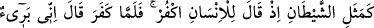
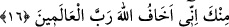

sonucunu tadanlardır. Bahsedilen kötü sonuç ise Bedir savaşında öldürülme azâbıdır.
Bedir savaşı, hicretin ikinci yılı Ramazan ayında, Nadiroğulları savaşından önce
olmuştur.
“Onlara acıklı bir azab vardır.” Âhirette onlar için büyüklüğünü takdir etmeğe güç
yetmeyen elem verici bir azab vardır. Bir şey yemeğe nispetle onu tatmak nasıl basit ise,
onların âhirette görecekleri azaba nispetle dünyadaki öldürülme azapları o nispette
hafiftir. Âyetin mânâsı şöyledir: “Bu yahûdilerin durumu dünyada ve âhirette,
kendilerinden az önce geçenlerin durumu gibidir.” Ancak bu durum yahûdilerin bir
kısmının hâlidir. Münâfıkların durumunu ise şu âyet-i kerime dile getirmektedir:
16. Münâfıkların durumu tıpkı şeytanın durumu gibidir. Çünkü şeytan insana
“İnkâr et” der. İnsan inkâr edince de: Ben senden uzağım, çünkü ben âlemlerin
Rabbi olan Allah’tan korkarım, der.
“Münâfıkların durumu tıpkı şeytanın durumu gibidir.” Bu cümle, gizli olan ve
münâfıkların durumunu açıklayan, ayrıca yahûdilere âid ikinci bir durumu ifâde eden
mübtedânın ikinci haberidir. Yahûdilerin diğer halleri, münâfıkların sözlerine kanıp
önce gururlanmaları, sonra da hayal kırıklığı ve ümidsizliğe uğramalarıdır. Âyet-i
kerimenin nazmında, isnad edilen tarafı özellikle ve kesin olarak belirtmeden, her iki
topluluğun zamirine muzaf ve gizli mübtedâya iki haberden her biri isnad edilmek
sûretiyle hepsinin durumu özetlenmiştir. Şöyle ki, bunlardan her ikisi benzerini
çağrıştırarak akla getirmektedir. Sanki şöyle denmiş olmaktadır: “Azaba uğramaları
bakımından Yahûdiler, kendilerinden öncekiler gibidir. Anlatıldığı tarzda münâfıklar da,
yahûdileri aldatarak onları savaşa sürüklemekte şeytanın benzeridirler.”
“Çünkü şeytan insana: İnkâr et, der. İnsan inkâr edince de: Ben senden uzağım,
der.” Şeytanın “inkâr et” sözü, insanı inkâr etmesi için aldatmasından mecâz olarak
kullanılmıştır. Tıpkı bir âmirin memuru emredilen şey konusunda aldatması gibi.
Şeytanın iğvâsına aldanması ve arzusuna uyması sonucu insanın inkâr etmesi üzerine
şeytan, bahsedilen o insana: “Ben senden uzağım. Senin Allah’a olan inkâr ve ortak
koşmana râzı olmadığım halde küskün olarak seni terk ediyorum” der.
Bir şeyden uzak olmak, berî olmak mânâsında berie, yebraü fehüve berîün denir.
Masdarı el-bür’ü ve el-beraetü şeklinde gelir. Teberrî’nin asıl mânâsı; “beraber
bulunmaktan hoşlanılmayan bir şeyden kurtulmak” demektir. Âlimler şöyle demişlerdir:
Âyetteki el-insan kelimesinde yer alan târif lamından cins kasdedilmiş olması
durumunda şeytanın “Ben senden uzağım” sözüyle kendini temize çıkarmağa çalışması
kıyamet gününde olacaktır. Çünkü o, âyet-i kerimenin de haber verdiği gibi, “çünkü ben